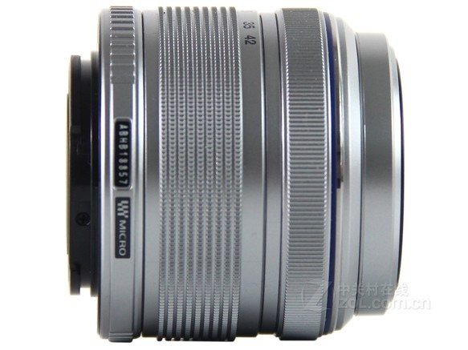
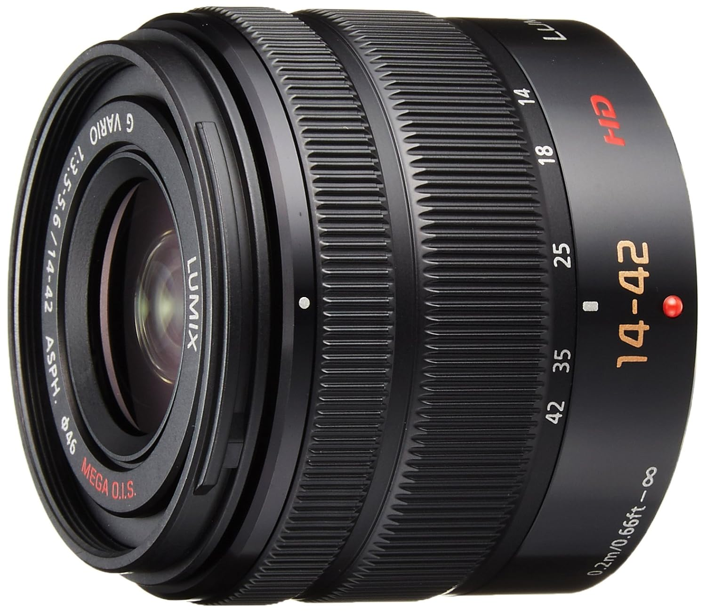
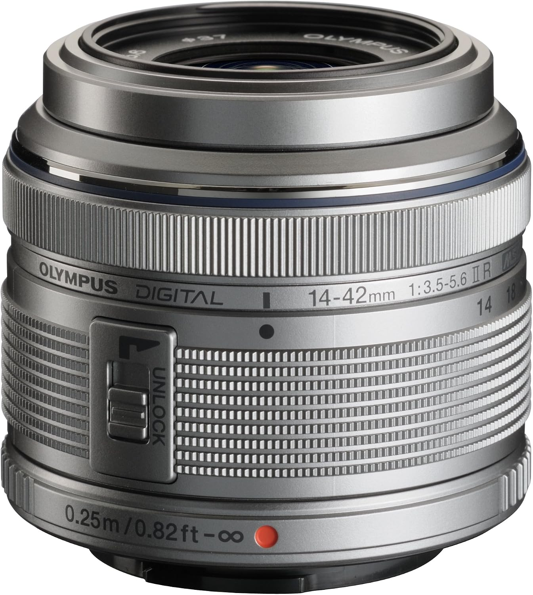
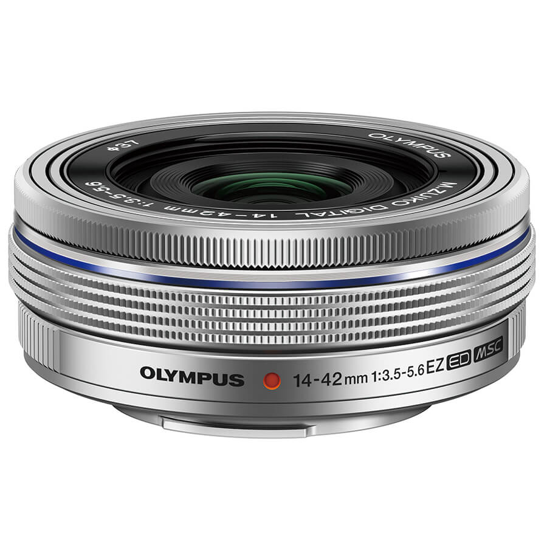
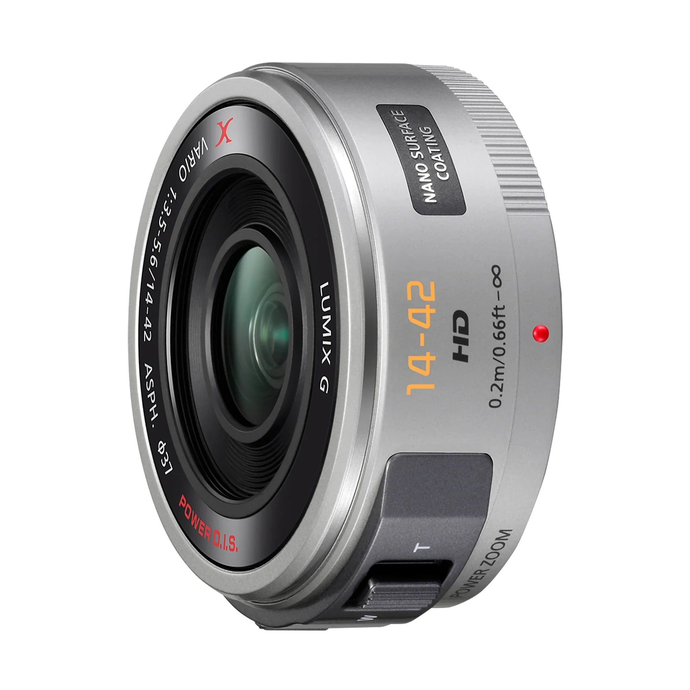
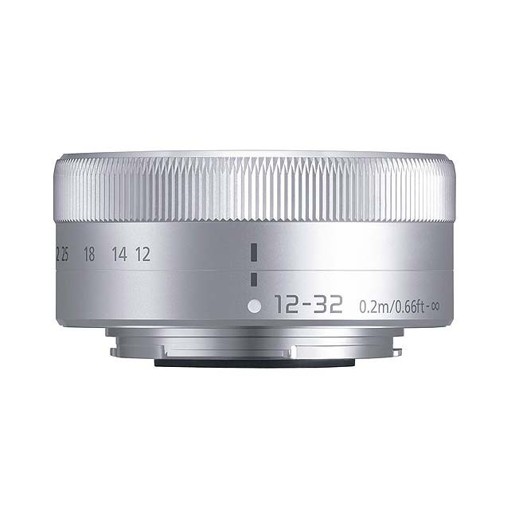
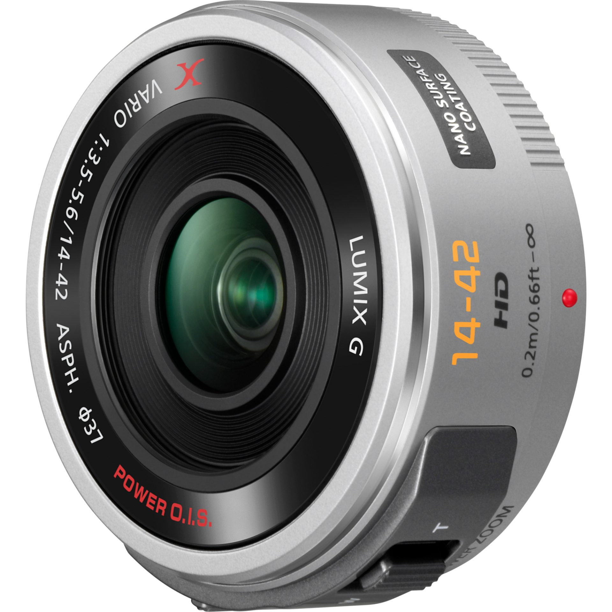

| 序 | 镜头图 | 型号 / 规格 / 外观 | 预期到手价 | 优点 | 缺点 |
|---|---|---|---|---|---|
| 1 |  |
奥林巴斯 M.ZUIKO 14-42mm f/3.5-5.6（一代） 等效 28–84mm · 150g · 手动旋出伸缩 外观：低：全塑料镜身，银色为涂层，质感与金属 PEN 机身不搭 |
240–300 元 200–320 元（约 12 条在售） |
|
|
| 2 |  |
松下 LUMIX G Vario 14-42mm f/3.5-5.6 ASPH（一代） 等效 28–84mm · 165g · 带 MEGA O.I.S 外观：中低：机身偏粗、通体塑料感，黑色居多，银色款少见 |
320–350 元 250–400 元（约 15 条在售） |
|
|
| 3 |  |
奥林巴斯 M.ZUIKO 14-42mm f/3.5-5.6 II R 等效 28–84mm · 113g · 手动旋出伸缩 外观：中：银色金属质感涂层、金属卡口，配银 PEN 比较协调 |
300–380 元 258–450 元（约 10 条在售） |
|
|
| 4 |  |
奥林巴斯 M.ZUIKO 14-42mm f/3.5-5.6 EZ（电动饼干·银色） 等效 28–84mm · 93g · 关机厚 22.5mm 外观：高：银色金属镜身、无外凸镜筒，与 E-PL9 银色皮革机身是原厂套装风格 |
390–425 元 320–510 元（约 30 条在售） |
|
|
| 5 |  |
松下 LUMIX G Vario 14-42mm f/3.5-5.6 II ASPH（二代） 等效 28–84mm · 110g · 带 MEGA O.I.S 外观：中：比一代紧凑，做工规整，但仍是塑料镜身 |
450–478 元 405–478 元（约 5 条在售） |
|
|
| 6 |  |
松下 LUMIX G Vario 12-32mm f/3.5-5.6 ASPH 等效 24–64mm · 70g · 关机厚 24mm 外观：高：银色金属拉丝面板、极短镜筒，是这批最精致的小镜 |
430–480 元（需砍价） 372–639 元（约 30 条在售） |
|
|
| 7 |  |
松下 LUMIX G X 14-42mm f/3.5-5.6 PZ（电动饼干·银色） 等效 28–84mm · 95g · 关机厚 26.5mm 外观：高：金属镜身、X 系列做工，是这批质感最高的一支 |
500 元左右 369–800 元（约 28 条在售） |
|
|
定位：低：全塑料镜身，银色为涂层，质感与金属 PEN 机身不搭
优势
短板
定位：中低：机身偏粗、通体塑料感，黑色居多，银色款少见
优势
短板
定位：中：银色金属质感涂层、金属卡口，配银 PEN 比较协调
优势
短板
定位：高：银色金属镜身、无外凸镜筒，与 E-PL9 银色皮革机身是原厂套装风格
优势
短板
定位：中：比一代紧凑，做工规整，但仍是塑料镜身
优势
短板
定位：高：银色金属拉丝面板、极短镜筒，是这批最精致的小镜
优势
短板
定位：高：金属镜身、X 系列做工，是这批质感最高的一支
优势
短板
400 元上下、要好看又要能干活，按这个顺序选：
闲鱼验机五件事：